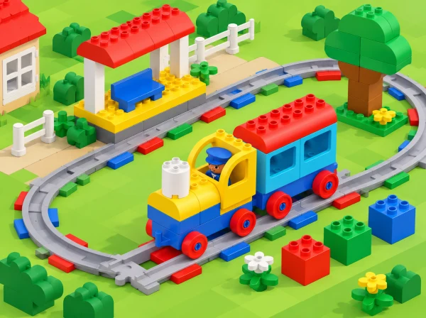
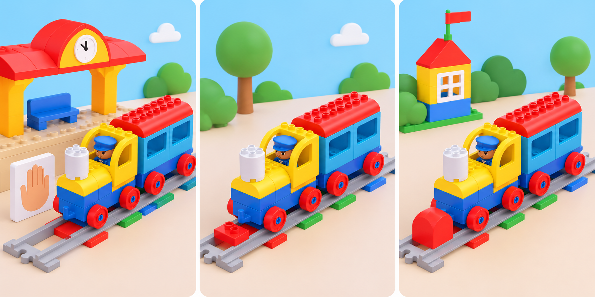

Explorem les peces de la via
🏷️ Convivència i ciutadania
🌱 Situació, repte i intenció
🎯 Aprenentatges i vocabulari
- Identificar les peces del set que s’han comprovat i construir una via estable en equip.
- Descompondre una ruta en ordres i anticipar l’arribada a una destinació de la maqueta.
- Provar les opcions d’aturada disponibles i registrar què fa realment cada maó.
- Explicar com l’evidència d’una prova confirma o modifica la seqüència prevista.
🧰 Materials i preparació
La lliçó LEGO està dissenyada per a grups de fins a sis. Prepareu vies suficients per a una línia de doble extrem que puga incloure l’estació i la destinació; la font suggereix huit trams, però adapteu el muntatge a la caixa real. Afegiu la figura de passatger, peces de construcció i els maons rojos i verds que efectivament estiguen disponibles. Feu una prova del tren i comproveu que la superfície siga plana, estable i fora del pas.
No cal disposar de targetes oficials de construcció: cada equip pot crear una destinació nova. Verifiqueu al manual la diferència entre els maons rojos disponibles, que poden no ser iguals, i no deduïu funcions només a partir del color. Si una de les tres modalitats d’aturada de la lliçó no forma part de la dotació, marqueu-la com a no disponible i investigueu les altres.
No poseu mans, roba ni objectes davant d’un tren en moviment, ni bloquegeu rodes o motor per forçar-ne l’aturada.
📅 Seqüència didàctica
Construïm la destinació i el trajecte (40 min)
Fase 1 · Activem i prediem
Activeu idees prèvies preguntant quan han vist un tren, tramvia o autobús i com saben on cal baixar. Qui no vulga compartir experiències pot triar una fotografia o un pictograma. Presenteu el joc del tren amb moviment en fila només si resulta còmode i segur; l’alternativa és moure una figura sobre caselles amb senyals visuals «avança» i «para». Cada parella tria un lloc pròxim o inventat i prediu quina ruta el connectaria amb l’estació.
Fase 2 · Explorem i construïm
Construïu la destinació amb peces, munteu l’estació, col·loqueu-hi la figura passatgera i prepareu una via de doble extrem entre l’estació i el destí. Abans d’encendre el tren, representeu el trajecte amb el dit, peces o pictogrames; intercanvieu destinacions entre equips perquè cada grup prove també un model diferent.
Fase 3 · Expliquem i registrem
Descriviu la ruta amb un punt d’inici i un destí. Feu una predicció observable: on quedarà el tren i quines peces o ordres calen perquè la passatgera hi arribe? Una persona explica la seqüència i una altra la segueix sobre la maqueta.
Fase 4 · Apliquem i millorem
Executeu el trajecte a baixa velocitat i compareu el resultat amb la predicció. Si no arriba al lloc acordat, torneu al mapa, localitzeu l’últim punt correcte i canvieu una sola part de la ruta abans de repetir.
Fase 5 · Comprovem i reflexionem
Compareu maneres d’aturar el tren (40 min)
Fase 1 · Activem i prediem
Recupereu la ruta i pregunteu com es pot aturar el tren amb seguretat. En una via curta i a velocitat adequada, cada equip col·loca una fitxa al punt on pensa que s’aturarà amb la modalitat manual practicada en la preparació bàsica.
Fase 2 · Explorem i construïm
La persona conductora executa la prova; l’observadora assenyala el lloc real i la registradora marca el resultat amb una icona o una paraula. Repetiu el protocol amb el maó d’acció roig i el maó roig d’aturada només si tots dos formen part de la dotació.

Fase 3 · Expliquem i registrem
Compareu «opció provada / predicció / què hem vist / punt d’aturada». Expliqueu si ha calgut una acció de la persona o si la peça ha provocat l’aturada, i quina diferència observable hi ha entre les opcions disponibles.
Fase 4 · Apliquem i millorem
Repetiu només quan necessiteu confirmar una observació. Si una peça no existeix en el kit, poseu una targeta «no disponible» al registre; no n’invente el comportament ni la substituïu per una peça que no tinga la mateixa funció. Manteniu constants la via i la velocitat per fer una comparació justa.
Fase 5 · Comprovem i reflexionem
Allarguem el viatge i investiguem altres maons (40 min)
Fase 1 · Activem i prediem
Recupereu les observacions dels maons rojos i pregunteu què voldria comprovar el grup amb un maó verd. Afegiu trams i una o dues parades pròpies; dibuixeu la nova ruta i ordeneu-ne les accions abans de circular.
Fase 2 · Explorem i construïm
Situeu un maó verd, d’un en un, en un punt visible i segur. Observeu què fa al tren concret del centre i compareu-ho amb la resposta del maó roig. Descriviu el canvi observat: no deduïu la funció només pel color.
Fase 3 · Expliquem i registrem
Proposeu el repte de tornar a l’estació. Representeu el camí de retorn i decidiu en quin sentit hauria d’anar el tren. Anoteu què fa el maó provat i quin efecte té en la ruta completa.
Fase 4 · Apliquem i millorem
Proveu una modificació cada vegada. Si la ruta no es completa, torneu al dibuix, localitzeu el darrer punt correcte i planifiqueu només el pas següent. Reviseu la seqüència després de cada prova i expliqueu què ha canviat.
Fase 5 · Comprovem i reflexionem
🧪 Evidències i avaluació
Recolliu el model, la representació seqüenciada, la taula comparativa i una explicació final. Observeu si l’alumnat:
- coopera en la construcció de la destinació i la via;
- descriu una ruta amb principi i final en un ordre comprensible;
- anticipa on pararà el tren i compara la predicció amb el resultat;
- distingeix el comportament observat dels maons disponibles;
- fa servir una prova per confirmar, matisar o canviar una idea.
És suficient mostrar-ho amb gestos, fotografies de la seqüència, peces, pictogrames o paraules pròpies. Valoreu l’explicació i l’ús curós del material, no la complexitat del model ni la rapidesa de la construcció.
♿ Participació, accessibilitat i seguretat
Useu trams de via grans i contrastats, demostreu l’acció peça per peça i oferiu fotos ampliades o una maqueta tàctil. Els rols de construcció, planificació, conducció i registre roten en cada prova; una persona pot dictar instruccions perquè una altra programe el tren. Permeteu resposta amb mirada, elecció entre pictogrames, gest o comunicació augmentativa. Manteniu l’alumnat a distància segura durant la marxa i oferiu l’opció d’observar en lloc d’acostar-se al moviment.
🔗 Referents i adaptació
Adapta First Trip, la lliçó inicial de Coding Express: construir estació i destinació, crear una via de doble extrem, guiar una passatgera fins al destí, comparar tres maneres d’aturar el tren i explorar després els maons verds i una ruta amb més parades. El jardí o la biblioteca, els pictogrames, el full de registre i les preguntes d’aula són propis; les accions dels maons s’han de verificar amb el model que té el centre.